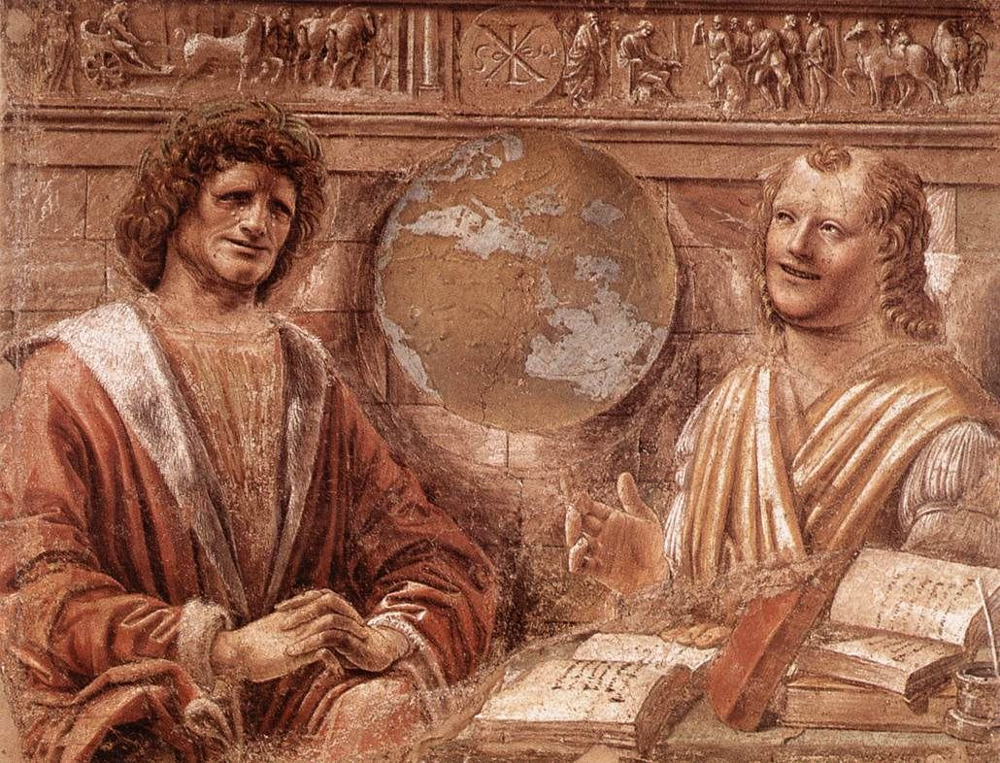

τί ἐστι;Donato Bramante, Heraclitus and Democritus, c. 1486
Everything the literature says about the paradox of analysis — and the exact point at which it stops short of the Socratic “What is F?” question.
The previous turn produced a result out of Langford’s 1964 note: Benson’s semantic condition (S) wants a formal analysis (synonymy) while his explanatory condition (E) wants a synthetic one (new concepts, necessarily coextensive) — and Langford shows those come apart. The question this sweep answers is whether that fork has a literature behind it, and whether anyone has already run it at Socrates.
Short answer: the fork has a very large literature — roughly sixty years of it, four distinct waves. Nobody has run it at Socrates. The closest thing in print is a single conditional sentence in a reference work.
The file on the desk — langford1964.pdf — is C. H. Langford, “Analysis,” Philosophy and Phenomenological Research 25.1 (September 1964), 117–21. It is a five-page note, and it is not the paradox paper. Its own footnote 2 points at the right one. Here is the correct primary source, with the pagination sorted out, because the reprints disagree:
| Item | Where | Pages | Note |
|---|---|---|---|
| Langford, “The Notion of Analysis in Moore’s Philosophy” | P. A. Schilpp (ed.), The Philosophy of G. E. Moore, Library of Living Philosophers IV, Evanston & Chicago: Northwestern UP, 1942 | 319–42 |
Morton White’s JSL review gives 319–42 for the first printing. |
| — Tudor reprint | New York: Tudor, 1952 | 321–42 |
This is the printing Langford himself cites in the 1964 note. |
| — Open Court reprint | La Salle, IL: Open Court, 3rd edn. 1968 | 321–42 |
The printing most modern articles cite. |
| Moore, “A Reply to My Critics,” §11 ‘Analysis’ | Schilpp 1942 | 533–677, esp. 660–67 |
The reply is where Moore concedes he cannot solve it. |
| Langford, “The Nature of Formal Analysis” | Mind 58 (1949) | 210–14 | The middle piece; sets up the 1964 note. |
| Langford, “Analysis” | Phil. Phen. Res. 25.1 (1964) | 117–21 | The file on the desk. Formal vs. synthetic analysis. |
The paradox itself, as Langford states it:
And Moore’s answer, which is the reason the problem became a literature rather than an exchange:
Two things are worth registering about that reply, because they are structurally the same two moves the OSAP paper is already tracking. Moore’s only escape is to say the two statements are partly about their own expressions — which is a retreat from the object to the question’s own vehicle, exactly the retreat Benson makes when he lets (V) do the work (P) cannot. And Moore then declines to say in what sense, which is a confessed terminus, not an answer.
Forty items located. What is striking is the shape: an intense decade, a lull, a metaphysical revival, a semantic revival, and then near-silence after 2011. Every wave attacks the same joint — whether analysandum and analysans are one thing or two — and no wave concedes to the one before it.
| Item | Venue | What it does |
|---|---|---|
| Black, Max (1944), “The ‘Paradox of Analysis’” | Mind 53.211: 263–67 | First full-dress article after Langford. Opens the exchange. |
| White, Morton (1945), “A Note on the ‘Paradox of Analysis’” | Mind 54.213: 71–72 | Reply to Black. |
| Black, Max (1945), “The ‘Paradox of Analysis’ Again: A Reply” | Mind 54.215: 272–73 | Counter-reply. |
| White, Morton (1948), “On the Church–Frege Solution of the Paradox of Analysis” | Phil. Phen. Res. 9.2: 305–08 | Extends the ordinary/oblique distinction to the paradox. |
| Linsky, Leonard (1949), “Some Notes on Carnap’s Concept of Intensional Isomorphism…” | Philosophy of Science 16.4: 343–47 | Tests Carnap’s machine against the paradox. |
| Sellars, Wilfrid (1950), “The Identity of Linguistic Expressions and the Paradox of Analysis” | Phil. Studies 1.2: 24–31 | The strongest metalinguistic treatment of the first wave. |
| Langford, C. H. (1950), “The Paradoxes” | J. Phil. 47.26: 777–78 | Langford’s own short return to the problem. |
| Feyerabend, P. K. (1956), “A Note on the Paradox of Analysis” | Phil. Studies 7.6: 92–96 | Closes the wave. |
| Item | Venue | What it does |
|---|---|---|
| Äqvist, Lennart (1962), “Comments on the Paradox of Analysis” | Inquiry 5: 260–64 | Sorts the substitution and triviality principles; reviews Carnap, Lewy, Feyerabend, Hare. |
| Hanson, N. R. (1963), “Equivalence: The Paradox of Theoretical Analysis” | Australasian J. Phil. 41.2: 217–32 | Transposes the paradox into philosophy of science. |
| Barber, Kenneth (1968), “A Note on a Paradox of Analysis” | Phil. Studies 19.3: 37–43 | Short critical note. |
| Gram, M. S. (1969), “The Paradox of Analysis” | in E. D. Klemke (ed.), Studies in the Philosophy of G. E. Moore, Chicago: Quadrangle, 258–75 | The anthology treatment; sits alongside Lazerowitz’s “Moore and Philosophical Analysis” (227–57) in the same volume. |
| Myers, C. Mason (1971), “Moore’s Paradox of Analysis” | Metaphilosophy 2.4: 295–308 | Distinguishes occurrent, dispositional and property concepts; introduces “epistemic gain.” |
| Lewy, Casimir (1976), Meaning and Modality | Cambridge UP, chs. 6–7 | The standard book treatment of the mid-century debate. Lewy edited Moore’s Lectures on Philosophy and knew the material from the inside. |
| Item | Venue | What it does |
|---|---|---|
| Chisholm, R. M. & Potter, R. C. (1981), “The Paradox of Analysis: A Solution” | Metaphilosophy 12.1: 1–6 | An essentialist solution from the leading essentialist of the period. |
| Ackerman, Diana F. [Felicia] (1981), “The Informativeness of Philosophical Analysis” | Midwest Studies in Philosophy VI (French, Uehling & Wettstein, eds.), 313–20 | Explicitly on Moore, Langford and the paradox. The best entry point of the wave. |
| Parsons, Terence D. (1981), “Frege’s Hierarchies of Indirect Senses and the Paradox of Analysis” | Midwest Studies in Philosophy VI, 37–57 | The Fregean machinery worked out properly. |
| O’Connor, David (1982), “Moore and the Paradox of Analysis” | Philosophy 57.220: 211–21 | Source of the p. 666 confession quoted above. But its formulation of the paradox comes from Lewy, not Langford, whom it names once and never reads. Now read: see §4. |
| O’Connor, David (1982), “Moore’s Conception of Analysis” | ch. 4 of The Metaphysics of G. E. Moore, Philosophical Studies Series 25, Dordrecht: Reidel, 71–85 | Book-length context for the article. |
| Sosa, Ernest (1983), “Classical Analysis” | J. Phil. 80.11 | Defends analysis as a classical project; the target Bealer answers. |
| Bealer, George (1983), “Remarks on Classical Analysis” | J. Phil. 80.11: 711–12 | Reply to Sosa. Bealer’s full apparatus is in Quality and Concept (Oxford: Clarendon, 1982) — a fine-grained intensional logic built precisely so that necessarily equivalent conditions can be distinct. |
| Fumerton, Richard (1983), “The Paradox of Analysis” | Phil. Phen. Res. 43.4: 477–97 | The longest single article on the problem. Fumerton returns to it in “Open Questions and the Nature of Philosophical Analysis,” in Nuccetelli & Seay (eds.), Themes from G. E. Moore, Oxford, 2007, ch. 11. |
| Schick, T. W. Jr. (1986), “Kant, Analyticity, and the Paradox of Analysis” | Idealistic Studies 16.2: 125–31 | Reads Kantian conceptual containment as the solution. |
| Dummett, Michael (1987), “Frege and the Paradox of Analysis” | in Frege and Other Philosophers, Oxford, 1991, 17–52 | Traces the paradox back past Moore — but to Husserl, quoted in Frege’s 1894 review, not to Frege. Never cites Langford. Now read: see §4. |
| Cobb, J. L. (1987), The Paradox of Analysis | PhD diss., Brown | Book-length; proposes a “determining property” account. |
Note the ancestry. The paradox is not Langford’s invention and is not Moore’s. It is stated by Husserl in the Philosophie der Arithmetik (1891) and quoted — in order to be dismissed — in Frege’s 1894 review. Langford named it fifty-one years later. See §4.1 below, where the primary text is now quoted directly; Dummett’s chapter is the route to it, and Dummett himself never mentions Langford at all.
| Item | Venue | What it does |
|---|---|---|
| Jacquette, Dale (1990), “A Fregean Solution to the Paradox of Analysis” | Grazer Phil. Studien 37: 59–73 | The Fregean route defended. |
| Ackerman, Felicia (1990), “Analysis, Language, and Concepts: The Second Paradox of Analysis” | Philosophical Perspectives 4: 535–43 | Shows a residual paradox survives the standard solutions. See also her “Analysis and Its Paradoxes,” in The Scientific Enterprise (Boston Studies), 1992, 169–78. |
| Callaway, H. G. (1993), Context for Meaning and Analysis | Amsterdam: Rodopi | Book-length; situates the paradox in the Frege–Carnap–Quine–Davidson line. |
| Rieber, S. D. (1994), “The Paradoxes of Analysis and Synonymy” | Erkenntnis 41.1: 103–16 | Metalinguistic solution: expressions refer to their own semantic structures. |
| Kemp, Gary (1995), “Salmon on Fregean Approaches to the Paradox of Analysis” | Phil. Studies 78.2: 153–62 | Engages Nathan Salmon’s structured-proposition treatment. |
| Orilia, F. & Varzi, A. C. (1998), “A Note on Analysis and Circular Definitions” | Grazer Phil. Studien 54: 107–13 | Denies analysandum and analysans are the same entity, following Gupta & Belnap’s revision theory. Belnap again — the same author whose erotetic logic Benson borrows. |
| Cobb, Jeffrey (2001), “Problems for Linguistic Solutions to the Paradox of Analysis” | Metaphilosophy 32.4: 419–26 | Argues the whole metalinguistic family fails. |
| Earl, Dennis (2007), “A Semantic Resolution of the Paradox of Analysis” | Acta Analytica 22.3: 189–205 | Analysandum and analysans are distinct concepts differing in conceptual form. |
| Wen, Xuefeng (2007), “A Propositional Logic with Relative Identity Connective…” | Studia Logica 85.2: 251–60 | A formal partial solution via ternary relative identity. |
| Nelson, Michael (2008), “Frege and the Paradox of Analysis” | Phil. Studies 137.2: 159–81 | On Frege’s 1914 manuscript: explicandum and explicans “express the same sense.” |
| Item | Venue | What it does |
|---|---|---|
| McGinn, Colin (2011), Truth by Analysis: Games, Names, and Philosophy | Oxford UP; ch. 4 is “The Paradox of Analysis” | Defends philosophy as conceptual analysis broadly construed, answering three objections: family resemblance, circularity, and the paradox. The most recent sustained treatment. |
| Rattan, Gurpreet (2014), “Epistemological Semantics beyond Irrationality and Conceptual Change” | J. Phil. 111.12: 667–88 | Adjacent; the paradox appears as a constraint rather than a topic. |
| Rattan, Gurpreet (2016), “Truth Incorporated” | Noûs 50.2: 227–58 | Cognitive value of the truth concept; same adjacency. |
| Baker, D. C. (2016), “Intuitions about Disagreement Do Not Support the Normativity of Meaning” | Dialectica 70.1: 65–84 | Uses the Open Question Argument machinery. |
Classified on the scheme used for the earlier erotetic-regress survey. The result is unusually clean: one near-direct statement, two partial ones, all three by the same author, in the same reference work, and none of them developed anywhere.
The earlier commissioned survey was wrong about a negative because it could not open the books. This
one was checked by searching the full text of the actual volumes, on the shelf and in the extracted
working files. Counts are occurrences of Langford and of paradox of analysis,
case-insensitive, across the whole text.
| Text | Why it should be there | “Langford” | “paradox of analysis” |
|---|---|---|---|
| Fine, The Possibility of Inquiry: Meno’s Paradox from Socrates to Sextus (2014) | An entire monograph on the paradox Beaney says anticipates Langford’s. | 0 | 0 |
| Benson, Socratic Wisdom (2000) | Builds (PD) out of Belnap & Steel’s erotetic logic; ch. 5 is on the form of the question. | 0 | 0 |
| Hintikka, Socratic Epistemology (2007) | States the regress of presuppositions and applies it to Socrates by name. | 0 | 0 |
| Vlastos & Burnyeat, Socratic Studies (1994) | The locus classicus for the problem of the elenchus. | 0 | 0 |
| Robinson, Plato’s Earlier Dialectic (1941/1953) | Contemporary with Langford; the founding treatment of Socratic definition. | 0 | 0 |
| Geach, Plato’s Euthyphro: An Analysis and Commentary (1966) | Geach names the Socratic Fallacy; the title says “analysis.” | 0 | 0 |
| Dancy, Plato’s Introduction of Forms (2004) | The most analytically-framed book on Socratic definitional theory. | 0 | 0 |
| Ferejohn, Formal Causes (2013) | Definition, explanation and unity in Socratic thought. | 0 | 0 |
And in the other direction, the most recent full-scale treatment of the priority of definition — the only one that resolves the problem by examining the “What is F-ness?” question itself, which is this paper’s own move — also contains nothing:
Clark’s diagnosis: commentators have tried to reconcile (PD) with the method “typically without a careful examination of his ‘What is F-ness?’ question,” and his solution is that the question introduces two distinct types of investigation, conceptual and causal.
This must be cited in the OSAP paper’s §2. It is the closest thing to a rival: same complaint about the literature, same decision to interrogate the question rather than the principle. It differs in what it finds there — Clark finds an ambiguity in the kind of investigation demanded; the paper finds a set of unwarranted presuppositions. Clark’s dual-function thesis is in fact a natural ally: a question that carries two distinct investigative demands is a question with more presuppositional freight, not less.
Neither the article nor the book mentions Langford, Moore, or the paradox of analysis.The sweep was run from bibliographies and abstracts. Five of its load-bearing claims have now been checked against the texts themselves. Three were wrong. The two that survived came back stronger than they went in.
Dummett translates the passage Frege quotes:
The horns are not the same. Langford’s are trivial or incorrect. Husserl’s are circular or incorrect. That difference is worth the whole detour, because the circularity horn is the Socratic horn. Husserl’s first horn is not that the definition tells you nothing; it is that the definition already contains what it was supposed to supply — which is precisely the complaint that the definiens of justice cannot be given without justice, and precisely the shape of the regress the paper is arguing for. Langford’s version, being about triviality rather than circularity, is the weaker of the two for this purpose.
Frege’s reply to Husserl, in the same review:
Frege escapes the paradox by dropping from sense to extension. Coextension is enough; which of two coextensive definitions you take is a matter of convenience. That is Benson’s coextensiveness condition on its own, with the other two matrix conditions discarded — and it is exactly the escape Socrates refuses. “Justice is not killing people” fails for Socrates even where it does not misfire extensionally, because Socrates wants the explanatory and semantic conditions too. Frege buys his way out with the currency Socrates will not spend.
Dummett then shows the escape does not work even for Frege: “the criterion for correct definition that he proposes in his review of Husserl is patently inadequate” (p. 29), because the two definitions of a conic are not merely coextensive but provably coextensive, and mere material equivalence would not be accepted by any mathematician as a definition. This is the same objection, in formal dress, that Socrates makes to every definition by accidental coincidence.
The find that most directly reinforces the paper:
A priority-of-definition principle, in Frege, generalised, and stated as a constraint on which definitions may be given first. It is the same structural claim as (PD) with the epistemic operator removed: not you cannot know x without knowing what F is, but you cannot define x before you have defined what x depends on. And Dummett’s observation that it “goes quite unmentioned in the review” is the diagnosis in miniature: the moment Frege needs to escape the paradox, the priority requirement disappears from view. One cannot hold both at once. That is the paper’s claim about Socrates, found independently in Frege by Frege’s best reader.
The sweep reported that Clark’s article and book contain no mention of Langford, Moore or the paradox of analysis. Full-text search confirms it: zero occurrences in both. What the sweep could not know from an abstract is how much worse that is. Clark’s central positive claim, in his own words:
“An informative synonym” is the paradox of analysis stated as a requirement. Langford’s whole point is that synonymous and informative are the two horns, and that an expression cannot wear both. “Sameness in cognitive significance” makes it worse: cognitive significance is Fregean vocabulary, and difference in cognitive significance is exactly what an informative analysis must have and a synonymy must not.
Clark does have an answer, though he does not present it as one. Following Forster, an informative synonym is “a synonym articulated by means of words, each of which signifies a concept other than that being defined” — fear as the expectation of future evil is informative; dread is not. That is Langford’s criterion for formal analysis, arrived at independently and forty-two years later: the analysans is synonymous but its verbal component shows the complexity of the conceptual one. And Clark’s footnote 31 adds the asymmetry — “If A defines B, it will not be the case that B defines A” — which is Frege’s order of conceptual priority under a third name.
Three authors, three vocabularies, one criterion, no citations between them:
Husserl 1891 / Frege 1894 — the defining expression must have “a more richly articulated sense”; definitions must respect the order of conceptual priority.
Langford 1942/1964 — formal analysis gives a synonymous but less idiomatic usage “whose verbal component shows the complexity of the conceptual component.”
Clark 2021/2022 — an informative synonym is one “articulated by means of words, each of which signifies a concept other than that being defined,” with an asymmetry constraint.
Clark is giving a structural solution to the paradox of analysis without knowing that is what it is, without defending it against the four waves of objections to it, and without noticing that Frege — whose vocabulary he borrows — abandoned it.What this does to §2 of the paper. Clark is no longer merely a rival to be cited. He is the demonstration. The claim “the Socratic literature has never been told about the paradox of analysis” is thin on its own; the claim “the most recent monograph on Socratic definition advances the paradox of analysis as its own positive thesis, in the same terms, and does not recognise it” is not. One further consequence: Clark places Socrates on the nominal side of the nominal/real definition fork — “I am suggesting Socrates is seeking something more like a nominal essence,” departing from Woodruff — which is the side on which the paradox bites hardest, and which he does not defend against it.
Michael Loux, Primary Ousia: An Essay on Aristotle’s Metaphysics Z and H (Ithaca: Cornell UP, 1991). Not part of the Langford question, but it belongs in the paper’s §5 and §6, because it is the same argument in Aristotelian dress and it reaches the same terminus.
That is the foundationalist horn stated as an ontological thesis: a level of essence that presupposes nothing prior and needs no explanation. It is Collingwood’s ultimate presupposition with a subject matter. Loux also reconstructs an explicit regress-and-terminate argument in the Categories — his Unanalyzability Thesis, that a primary ousia’s falling under its infima species must be primitive, because “were that to be the case, the more fundamental subject would have a better claim to status as primary ousia” (p. 4). Same move as the paper’s §5.1: the regress is stopped by fiat at the level where stopping is least costly.
And Loux registers the circularity, at the level of Aristotle’s own theory: essential predication is explained by reference to the ti ên einai, and the ti ên einai is characterised by reference to essential predication, so “the appeal to essential predication in the characterization of the notion of essence might strike us as circular” (p. 79). The theory of essence cannot define its own central term without using it — which is Husserl’s first horn, one level up.
Three independent routes to one terminus, now. Hintikka’s regress of question-presuppositions ends in Collingwood. Beaney’s history of analysis ends in Collingwood. Loux’s reconstruction of Metaphysics Z ends in essences that presuppose nothing prior. None of the three knows about the others.
Langford’s 1964 distinction — formal analysis, which gives a synonymous but less idiomatic usage whose verbal component shows the complexity of the conceptual one; synthetic analysis, which gives usages that are not synonymous but necessarily have the same denotation — is the same joint that every wave above pries at. Wave 1 asks whether synonymy or metalanguage does the work. Wave 3 asks whether the analysandum is a concept or a property. Wave 4 asks whether the two differ in conceptual form (Earl) or in structure (Schick, Sellars, Rieber). Every one of these is a way of asking Langford’s question: can one and the same statement be both synonymy-preserving and denotation-enlarging?
Benson requires both at once. His semantic condition (S) demands that the definiens give the meaning of the definiendum — formal analysis. His explanatory condition (E) demands that the definiens explain why the instances are F — synthetic analysis, since a synonym explains nothing. Sixty years of literature says these come apart. That is now a citable pressure on (PD), not an observation.
The survey commissioned earlier got a negative wrong because it could not open the books. This one opened them. Fine wrote four hundred pages on Meno’s paradox without naming Langford once. Benson imported Belnap & Steel’s erotetic logic without noticing that Belnap’s co-author on the revision theory of definitions was, in 1998, being used against the paradox of analysis by Orilia and Varzi. The two literatures are adjacent, share machinery, and do not read each other.
The paper reaches Collingwood’s ultimate presuppositions by one route: Hintikka’s regress of question-presuppositions terminates there, and the paper takes that terminus over as its foundationalist horn. Beaney reaches Collingwood by an entirely different route: the paradox of analysis runs back through Moore to Frege, and Collingwood’s Essay on Philosophical Method (1933) is where a response to it is developed — a response Collingwood himself traces to the Meno.
Two independent roads to the same terminus. One through erotetic logic and the regress of presuppositions; one through the theory of analysis and the trivial/incorrect dilemma. Neither knows about the other. They arrive at the same 1933 book. That is evidence the terminus is a real feature of the problem rather than an artefact of the paper’s own construction — which is exactly the kind of corroboration a novel argument in OSAP needs, and it is worth a paragraph in §5.1 or §7.
Action: Collingwood’s Essay on Philosophical Method (Oxford, 1933), esp. ch. 2 on the “overlap of classes,” should be read directly rather than through Hintikka. It is not currently in the folder.
The proposed “relata problem” section can now be written with a spine. The dilemma is not “here is a worry I have about (PD)” but: the demand Socrates makes has been known since 1894 to be over-determined, the problem was named in 1942, four waves of solutions have been proposed and none has become standard, and the ancient literature has never once been told. That is a paper-shaped claim.
It also gives the section its honest limit. The paradox of analysis is a problem about analysis; Socratic definitions are standardly read as real definitions, which is Benson’s own fork at §5.4.3 and Robinson’s in Definition (1954). The right claim is therefore conditional and should be stated as one: to the extent that (S) makes the Socratic demand a demand for analysis at all, the paradox applies to it — and (S) is Benson’s condition, not the paper’s invention. Beaney’s conditional, discharged in the opposite direction.
Nothing in this literature is in the folder — the library is entirely ancient philosophy, and the analytic philosophy of language shelf is empty. Access noted for each.
| # | Item | Why first | Access |
|---|---|---|---|
1 | Sharvy 1972, “Euthyphro 9d–11b: Analysis and Definition in Plato and Others,” Noûs 6: 119–37 | The only item that could falsify the negative result. Check it before writing §3.3. | JSTOR |
2 | Langford 1942 + Moore’s Reply §11, in Schilpp (ed.), The Philosophy of G. E. Moore | The primary text. The paper should quote Langford directly, not through the secondary literature, and the page needs verifying. | archive.org |
3 | Clark 2021 (AGPh) and Clark 2022, Plato’s Dialogues of Definition, Palgrave | The live rival on the same question. §2 of the paper is incomplete without it. | De Gruyter / Springer |
4 | Collingwood 1933, An Essay on Philosophical Method, Oxford | The convergence point of both routes. Currently reached only second-hand. | archive.org |
5 | Fumerton 1983, “The Paradox of Analysis,” PPR 43.4: 477–97 | The single most substantial article; sets out the options cleanly. | JSTOR |
6 | Ackerman 1981 and 1990 | The essentialist framing, and the residual second paradox that survives the solutions. | Wiley / Midwest Studies |
7 | Lewy 1976, Meaning and Modality, chs. 6–7 | The standard synthesis of waves 1–2 by someone who edited Moore’s lectures. | archive.org |
8 | Dummett 1987, “Frege and the Paradox of Analysis” | Establishes the pre-Moorean ancestry (Frege’s 1894 Husserl review), which generalises the problem past its Moorean setting. | OUP |
9 | McGinn 2011, Truth by Analysis, ch. 4 | The most recent book-length answer; useful for how a defender of analysis handles the objection. | OUP |
10 | Beaney, “Analysis,” SEP, main entry §§2, 5 and supplement §3 | The three sentences that are the entire existing bridge. Cite them precisely; they are the paper’s warrant for saying the connection is gestured at but never made. | Open |
Logged in full, per the standing rule that a survey which does not record its failures cannot be trusted about its successes. Exact strings; result stated even where nothing was found.
Sweep parameters. Forty items located across the SEP annotated bibliography §6 (“Conceptions of Analysis in Analytic Philosophy”), the PhilPapers category The Paradox of Analysis, and targeted searches; eight shelf volumes checked by full-text search. Classification scheme carried over from the erotetic-regress research prompt.
Standing caution. After the verification pass of §4, one load-bearing claim remains second-hand: the Langford quotation and its page, still taken from Schick rather than from the Schilpp volume. Fixable in an afternoon. And the assertion that no one has joined the paradox to the Socratic demand still stands or falls with Sharvy 1972, which remains unopened. Everything else in this document has now been checked against the text it cites.